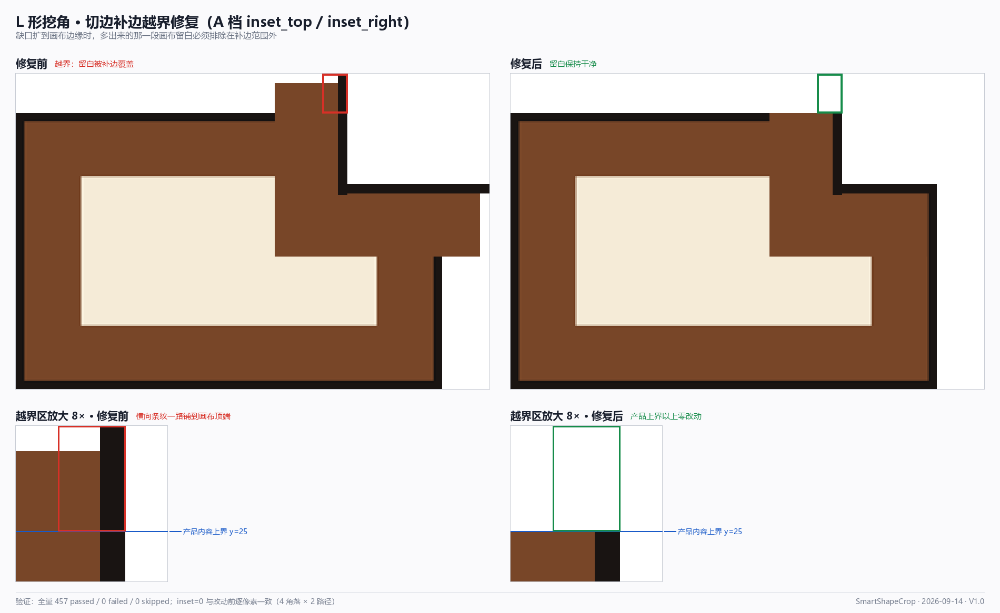

inset_top /
inset_right，把切边补边裁进产品内容边界inset_top / inset_right 内缩量，
默认值 0 使既有行为逐像素不变；传入实际内缩量后越界区改动像素为 0。
用户报告：图 1、图 2 中「垂直切边或水平切边的某一层在切角处画超了， 进入了不该画的区域」。对截图做只读像素剖面后，几何量化为：
| 量 | 值 | 说明 |
|---|---|---|
| 缺口左边界 | x = 417 | 垂直切边所在列（缺口在右） |
| 缺口下边界 | y = 79 | 水平切边所在行 |
| 产品内容上界 | y = 62 | 越界区就压在它上方 |
| 被覆盖列 | x = 402 ~ 416 | 15 列被纯色整段覆盖，边界极锐利（x=400 正常） |
| 越界竖条厚度 | ≈ 15 ~ 16 px | 与缺口下方水平切边厚度完全吻合 → 同源同层 |
max(dx, dy) 分层经形态学验算等价于方形结构元腐蚀，
正是矩形边框应有的直角结果，不是 bug。
三个条件叠加才触发，缺一不可：
RectShape(0,0,W,H)，子图就等于全画布，补边没有产品边界可裁cut_h_px = lshape.cut_h + _ir_y，缺口下边界 yc 因此**越过了产品顶边**b[0:yc, ...] 硬编码 y 起点 = 0，于是从顶端一路铺到 yc涉及代码位置（修复前）：
| 位置 | 形态 |
|---|---|
lshape_border.py:1126 | b[0:yc, xc-edge:xc] = black — 硬编码从 y=0 起铺 |
lshape_border.py:1128 / 1130 | 主带同一病症；水平切边 x 终点写成 W |
lshape_border_route.py:464-467 | y_lo = offs[k] if offs[k] < yc else 0；y_hi = yc+1 同病 |
image_ops.py:1266 | cut_h_px = lshape.cut_h + _ir_y — 放大因素 |
image_ops.py:1286 / 1294 | outer_rect=_canvas_rect — 补边无产品边界可裁 |

为两条补边路径统一增加 inset_top / inset_right，
含义是「缺口沿画布边缘扩展出去的那一段画布留白」，补边不得覆盖。默认 0，
因此所有既有调用点行为 逐像素不变。
inset_top = cut_h_px - lshape.cut_h # 缺口 y 方向多扩出来的部分
inset_right = cut_w_px - lshape.cut_w # 缺口 x 方向多扩出来的部分调用侧这两个差值天然等价于「cut 越过产品内容的那一段」， 四个角落（tl / tr / bl / br）一律成立 —— 无需按角分别写映射， 这是本次改动能把七处签名收拢到两个参数的原因。
在「缺口翻转到右上角」的归一化坐标系里，语义固定为：
| 参数 | 约束对象 | 实现 |
|---|---|---|
inset_top | 垂直切边的 y 起点 | y_lo = max(y_lo, inset_top) |
inset_right | 水平切边的 x 终点 | x_hi = min(x_hi, W - inset_right) |
y > yc，
而 yc = inset_top + lshape.cut_h > inset_top 恒成立，
所以角部永远落在产品内容之内，无需额外夹紧。同理，inset_top ≥ yc
的退化输入会被夹紧为整条垂直带跳过，不会抛异常。
原计划只改两个 patch_* 函数。实施时发现
compute_cut_edge_bboxes（旧 detect_pool_material_borders 路径）
有完全相同的越界结构 —— 若不改，走旧路径的素材仍会画超。
故一并加了内缩裁剪，否则这次修复只能算「三分之二」。
| 文件 | 增删 | 内容 |
|---|---|---|
core/lshape_border.py | +117 / -7 | compute_cut_edge_bboxes、_fill_vertical_horizontal、
patch_lshape_cut、_apply_v13_path、
_try_apply_v13、apply_lshape_border_completion 加参并透传 |
core/lshape_border_route.py | +32 / -3 | _fill_layers_vertical_horizontal、patch_lshape_cut_layers、
_apply_profile_path 加参并透传 |
core/image_ops.py | +11 | 调用侧计算两个内缩量并传入 apply_lshape_border_completion |
tests/core/test_lshape_border_route.py | +5 例 | 新增 TestCutEdgeInsetBound：默认值等价、越界复现、
内缩后留白零改动、单层变体同受约束、越界输入不抛错 |
# core/image_ops.py —— 调用侧
_inset_right = max(0, int(round(cut_w_px - lshape.cut_w)))
_inset_top = max(0, int(round(cut_h_px - lshape.cut_h)))
...
apply_lshape_border_completion(..., inset_top=_inset_top, inset_right=_inset_right)| 层级 | 方法 | 结果 |
|---|---|---|
| 叶子函数 | verify_inset.py：与「改动前原始实现」逐像素比对 + 留白区改动计数 |
4 角落 × 2 路径，inset=0 全部逐像素一致；inset>0 留白改动 0 像素 |
| 端到端 | verify_e2e_inset.py：只调公开入口
apply_lshape_border_completion，验证 V13 与 Profile 两条路由 |
两路由均：inset=0 复现越界；inset>0 留白干净且保留区补边仍在 |
| 回归 | 新增 TestCutEdgeInsetBound 5 例 |
5 passed |
| 全量 | pytest 全量 + --junitxml 权威统计 |
457 passed / 0 failed / 0 skipped（56.6s） |
pytest -q 会返回
退出码 1 且汇总行不落盘 —— 原因是 WorkBuddy 的 safe-delete 钩子拦下了
pytest 临时目录的批量删除（[SAFE_DELETE_BULK_CONFIRM_REQUIRED]），
pytest 在收尾阶段被打断。判读全量结果不能只看退出码，
应数进度行的 F/E，或改用 --junitxml 取权威计数。
带 --basetemp 指到项目内目录反而会让 35 个用例报 SystemExit，勿用。
bf81daa，只收录了 3 个源文件中的 1 个，导致 HEAD 处于「半个改动」状态。
该提交收录了 core/lshape_border.py（其中已调用
_apply_profile_path(..., inset_top=, inset_right=)），
但没有收录 core/lshape_border_route.py —— 而 HEAD 版的
_apply_profile_path 并不接受这两个关键字参数。后果：
TypeError；image_ops 外层的 except Exception 静默吞掉，
退化成「统一黑框兜底」；已按确认补齐提交，HEAD 恢复自洽：
| 提交 | 内容 | 状态 |
|---|---|---|
bf81daa | v2.2.1-修复L形挖角单边色带问题（只含 lshape_border.py） | 自洽性不足 |
87b3634 | 补齐 image_ops.py / lshape_border_route.py / 回归测试 | 已恢复自洽 |
# 复核 HEAD 自洽性（两个命令都应非空）
git show HEAD:core/lshape_border_route.py | grep -n "inset_top"
git show HEAD:core/lshape_border.py | grep -n "inset_top=inset_top"except Exception 静默回退，
这类错误不会崩，只会静默降级，比崩溃更难发现。
A 档只解决「补边越界」这一个问题。诊断阶段另发现两处次要缺陷，本次刻意未动：
| 档位 | 内容 | 影响 |
|---|---|---|
| B 档 | 让垂直切边各层与素材顶部边框带的实际 y 结构对齐（扫描定位横向边框带），
而非硬编码 0 / edge |
更根本，但需新增一次剖面扫描 |
| C 档 | 统一 Profile 与 V13 的口径：yc vs yc+1、
edge vs offs[1] |
消掉缺口下边界的 1px 亮缝与多层时的角部层序错位 |
建议 B、C 两档合并做一次，改后同样以「全量 + 图 1 同参数重渲染」复核。